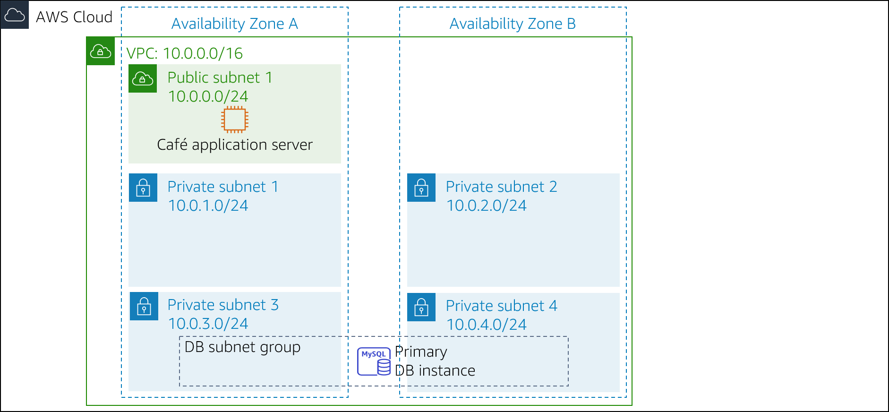
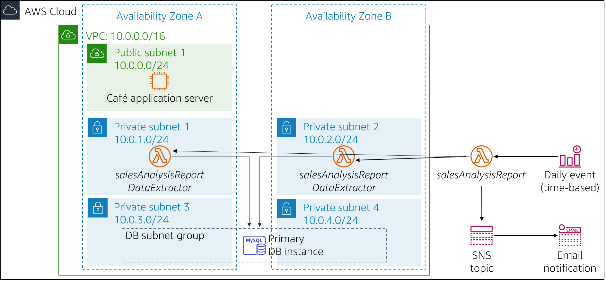

The café's business is thriving. Frank and Martha want to get daily sales reports for products that are sold from the café's website. They will use this report to plan ingredient orders and monitor the impact of product promotions.
Sofía and Nikhil's initial idea is to use one of the Amazon Elastic Compute Cloud (Amazon EC2) web server instances to generate the report. Sofía sets up a cron job on the web server instance, which sends email messages that report daily sales. However, the cron job reduces the performance of the web server because it is resource-intensive.
Nikhil mentions the cron job to Olivia, and how it reduces the web application's performance. Olivia advises Sofía and Nikhil to separate non-business-critical reporting tasks from the production web server instance. After Sofía and Nikhil review the advantages and disadvantages of their current approach, they decide that they don't want to slow down the web server. They also consider running a separate EC2 instance, but they are concerned about the cost of running an instance 24/7 when it is only needed for a short time each day.
Sofía and Nikhil decide that running the report generation code as an AWS Lambda function would work, and it would also lower costs. The report itself could be sent to Frank and Martha's email address through Amazon Simple Notification Service (Amazon SNS).
In this lab, you will take on the role of Sofía to implement the daily report code as a Lambda function.
In this lab, you will use AWS Lambda to create a café sales report that is emailed each day through Amazon SNS.
After completing this lab, you should be able to implement a serverless architecture to generate a daily sales report that features:
When you start the lab, your architecture will look like the following example:

At the end of this lab, your architecture should look like the following example:

Note: In this challenge lab, step-by-step instructions are not provided for most of the tasks. You must figure out how to complete the tasks on your own.
This lab will require approximately 90 minutes to complete.
In this lab environment, access to AWS services and service actions might be restricted to the ones that are needed to complete the lab instructions. You might encounter errors if you attempt to access other services or perform actions beyond the ones that are described in this lab.
At the top of these instructions, choose Start Lab to launch your lab.
A Start Lab panel opens, and it displays the lab status.
Tip: If you need more time to complete the lab, choose the Start Lab button again to restart the timer for the environment.
Wait until you see the message Lab status: ready, then close the Start Lab panel by choosing the X.
Note: This lab will take approximately 15 minutes to start.
At the top of these instructions, choose AWS.
This opens the AWS Management Console in a new browser tab. The system will automatically log you in.
Tip: If a new browser tab does not open, a banner or icon is usually at the top of your browser with a message that your browser is preventing the site from opening pop-up windows. Choose the banner or icon and then choose Allow pop ups.
Arrange the AWS Management Console tab so that it displays along side these instructions. Ideally, you will be able to see both browser tabs at the same time so that you can follow the lab steps more easily.
In the next several tasks, you will work as Sofía to create and configure the resources that you need to implement the reporting solution.
The code for generating the report is already written, packaged, and ready for you to deploy to AWS Lambda.
Download the following two files to your local machine:
Extract each of the .zip files and examine the contents.
Answers will be recorded when you choose the blue Submit button at the end of the lab.
Access the questions in this lab.
In the page you loaded, answer the first question:
Note: Leave the questions webpage open in your browser tab. You will return to it later in this lab.
In this task, you will create the DataExtractor Lambda function that extracts the café's sales data from an Amazon RDS database. So the Lambda function can access the RDS database instance, you must update the database security group with a rule to allow connections from the Lambda function. To enable this communication, you will create a security group for the Lambda function and add it as an inbound rule to the security group of the RDS instance.
Create a security group for the Lambda function with the following settings:
LambdaSGUpdate the DatabaseSG security group by adding your new Lambda function security group as a second source to the existing inbound TCP port 3306 rule.
Create a Lambda function with the following settings:
Function name: salesAnalysisReportDataExtractor
Runtime: Python 3.8
Role: salesAnalysisReportDERole
VPC:
Tip: It will take several minutes for the function to be created.
Configure the DataExtractor Lambda function as follows:
Lambda function to extract data from databasesalesAnalysisReportDataExtractor.lambda_handler30Return to the browser tab with the multiple-choice questions for this lab, and answer the following question:
In this task, you will create the Lambda function that generates and sends the daily sales analysis report.
Create a second Lambda function with the following settings:
salesAnalysisReportConfigure the salesAnalysisReport Lambda function as follows:
Lambda function to generate and send the daily sales reportsalesAnalysisReport.lambda_handler30The sales analysis report uses an SNS topic to send the report to email subscribers. In this task, you will create an SNS topic and update the environment variables of the salesAnalysisReport Lambda function to store the topic Amazon Resource Name (ARN).
Create a standard SNS topic with the following configuration:
SalesReportTopicSales Report TopicUpdate the salesAnalysisReport Lambda function by adding the following environment variable:
topicARNReturn to the browser tab with the multiple-choice questions for this lab, and answer the following question:
To receive the sales report through email, you must create an email subscription to the topic that you created in the previous task.
Create a new email subscription to the topic. Use an email address that you can easily access for this lab.
Confirm the email subscription from your email client. Note: If you don't receive an email confirmation, check your Junk or Spam folder.
Return to the browser tab with the multiple-choice questions for this lab, and answer the following question:
Before creating the daily reporting event, you must test that the salesAnalysisReport Lambda function works correctly.
Create a test for the salesAnalysisReport Lambda function.
Tip: You don't need to worry about parameters, so enter an event name and accept the default
hello-worldtest event.
Run the salesAnalysisReport test. If the test succeeds, you should have an email report in a couple of minutes.
If the Lambda function test execution failed, use the logs to review any errors, address them, and run the test again. Here are some troubleshooting tips that you can try:
Review the logs from Amazon CloudWatch Logs for both Lambda functions:
Review your work to make sure that you completed all the steps.
Go to the Submitting your work section and follow the steps to submit your work. The submission report will show whether you completed the previous steps correctly.
The last step in this challenge is to set up a trigger that will run the report each day.
Hint: If you get stuck, see the cron expression examples in the AWS Documentation. Tip: Use a time that is close to your current time, but remember that the time must be specified in Coordinated Universal Time (UTC)!
Check your email to see if you received the report.
Return to the browser tab with the multiple-choice questions for this lab, and answer the following question:
After Sofía finishes testing the reporting, she creates an email subscription for Frank and Martha. Frank and Martha are excited to receive the first daily report from the serverless solution.
Sofía is pleased that she automated sales reporting for the café, which will continue to help Frank and Martha analyze daily sales and plan the café's inventory. She's also happy that she successfully learned how to use AWS Lambda, Amazon SNS, and Amazon EventBridge. In fact, Sofía plans to implement more serverless and automated reporting features into the café's web application to help the café grow and manage their business.
At the top of these instructions, choose Submit to record your progress and when prompted, choose Yes.
If the results don't display after a couple of minutes, return to the top of these instructions and choose Grades
Tip: You can submit your work multiple times. After you change your work, choose Submit again. Your last submission is what will be recorded for this lab.
To find detailed feedback on your work, choose Details followed by View Submission Report.
Congratulations! You have completed the lab.
To confirm that you want to end the lab, at the top of this page, choose End Lab, and then choose Yes
A panel should appear with this message: DELETE has been initiated... You may close this message box now.
To close the panel, choose the X in the top-right corner.
©2020 Amazon Web Services, Inc. and its affiliates. All rights reserved. This work may not be reproduced or redistributed, in whole or in part, without prior written permission from Amazon Web Services, Inc. Commercial copying, lending, or selling is prohibited.